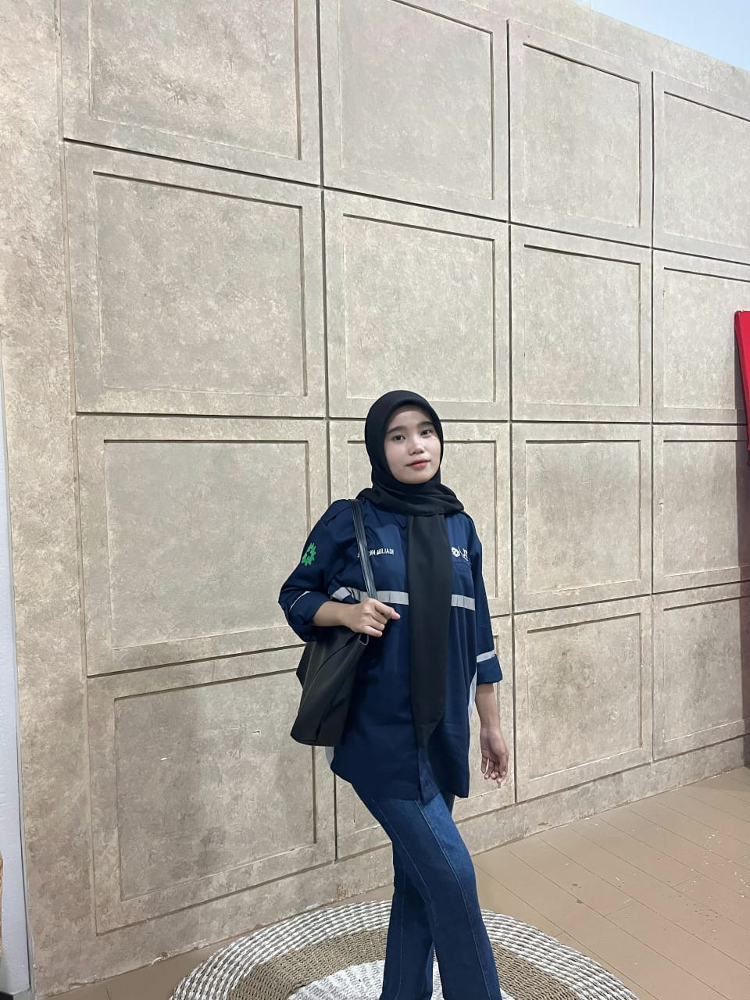

Sherlina Muliadi | PTIK F

Nama: Sherlina Muliadi
NIM: 240209501093
Kelas: PTIK F
Alamat: Jl. Urip Sumaharjo, Makassar
Asal Sekolah: SMA Negeri 2 Bone
Setiap kebaikan yang kita tabur, sekecil apa pun, tumbuh menjadi alasan orang lain percaya bahwa dunia masih layak untuk disyukuri.
Pada awal perkuliahan, saya merasa kesulitan karena berasal dari SMA yang tidak memiliki banyak pengalaman di bidang komputer. Namun, dengan bimbingan dosen dan kerjasama dengan teman-teman, saya mulai memahami dasar-dasar pemrograman dan jaringan.
Seiring berjalannya waktu, saya mulai menikmati pembelajaran di PTIK. Setiap tugas dan proyek memberi pengalaman baru yang bermanfaat untuk mengasah kemampuan saya dalam dunia teknologi.
Salah satu pengalaman yang paling berkesan saya adalah saat berhasil menyelesaikan program sederhana menggunakan C++. Walaupun awalnya sulit, rasa puas yang saya dapatkan membuat saya lebih semangat untuk belajar lebih dalam lagi.
| No | Nama | Jenis Kelamin | Alamat | Asal Sekolah | |
|---|---|---|---|---|---|
| Lengkap | Panggilan | ||||
| 1 | Andi Nurrizqah Hamdana | Ikka | Perempuan | Jl. Mallengkeri Raya | MAN 1 BONE |
| 2 | Nadine Patulak | Nadin | Perempuan | Jl. Perumahan Dosen Unhas | SMA Negeri 2 Toraja Utara |
| 3 | Fransisca Gabriela | Ela | Perempuan | Jl. Tidung | SMAN 9 Makasssar |
| 4 | Nirwana | Wana | Perempuan | Jln. Turatea | SMKN 1 Selayar |